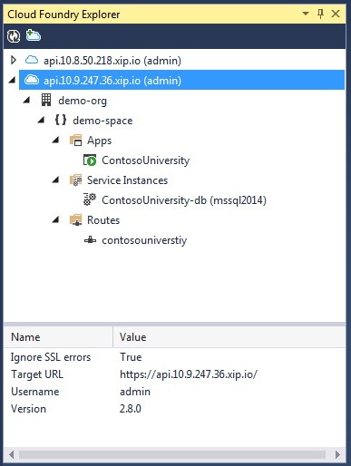

Helion Development Platform 1.2 adds tooling support for deploying Windows images and .NET Framework HTTP-based applications. This document describes how to install and use these tools.
This document contains the following sections:.NET tools:
Setup toolsThis Visual Studio 2013 extension is used to deploy and manage .NET applications. The extension can be used in any edition of VS 2013, including the Community (free) edition.
The Cloud Foundry Extensions page on Visual Studio Gallery can be found here.
The explorer can be opened in Visual Studio under **View ->Other Windows ->Cloud Foundry Explorer**.
The explorer window shows endpoints that you have successfully connected to:

The Cloud Foundry Explorer Window displays the following types of nodes:
|
Node Type |
Supported Actions |
Description |
|
Target |
Refresh, Remove |
Lists version, URL, login credentials, and whether to ignore SSL errors (e.g. from using self-signed certificates). |
|
Organizations |
Refresh, Remove |
Lists current roles in organization, organization name, and creation date |
|
Spaces |
Refresh, Remove |
Lists current roles in space, space name, and creation date |
|
Applications |
Refresh, Remove |
The deployed applications |
|
Application |
View App in Browser, Start, Restart, Stop and Delete |
Each deployed application. Shows creation date, application name, buildpack, max memory, and instance count. |
|
Services |
Refresh, Remove |
Shows details for the service collection |
|
Service |
Delete |
Shows current roles in service, service name, creation date |
|
Routes |
Refresh, Remove |
Shows details for the route collection |
|
Route |
Delete |
Shows the domain for the route, and which applications bind to it |
For an example of how to deploy an application from Visual Studio, see Deploying your first .NET Application.
These MSBuild processes allow you to build and deploy applications to Cloud Foundry instances as part of the usual build process for your application.
The MSBuild Tasks are language and technology agnostic, and can be used to deploy Java, Node, and other applications in addition to .NET applications.
The MSBuild tasks can be installed using NuGet:
The MSBuild Tasks NuGet package can be found here.
For more information on MSBuild, see MSBuild on MSDN .
The SDK is used for programmatic access to controlling Windows images and .NET applications. Using the SDK, developers can create build and deployment automation and tools that interact with the ALS APIs.
The Cloud Foundry .NET SDK can be installed using NuGet:
The CloudFoundry NuGet package can be found here.
This tool is used to add services to new ALS clusters. The same tool is used for Linux and Windows instances.
To add a DEA role to a Windows instance, use the following syntax:
cf-mgmt add-role dea --load <filename>.yml
To add a SQL Server role to a Windows instance, use the following syntax:
cf-mgmt add-service mssql2014 --load <filename>.yml
For more information on the ALS cluster management tool, see Helion ALS Cluster Management Tool Reference.
The ALS cluster management tool can be downloaded from the following location: Download.
This tool is used to deploy applications from the command line. The same tool is used for deploying applications to Windows and Linux instances.
To deploy a .NET application to a Windows instance, use the following syntax from the same folder as your manifest.yml file:
helion target <cluster URL> helion login helion push --stack win2012r2
For more information on the Helion client, see HPE Helion 2.0 Development Platform: Application Lifecycle Service Client Command Reference
The Helion client tool can be downloaded from the following locations: